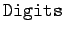
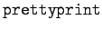
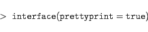

Inhalt Index DeskTop Bronstein

 Computeralgebrasysteme Maple Ergänzungen zur Syntax, Informationen und Hilfe
Computeralgebrasysteme Maple Ergänzungen zur Syntax, Informationen und Hilfe


Die Ausgaben von Maple lassen sich mit einer Reihe von Umgebungsvariablen steuern. Bereits vorgestellt ist die Variable , mit der die Anzahl der auszugebenden Ziffern von Gleitpunktzahlen festgelegt werden kann.
Die allgemeine Art der Resultatausgabe wird durch  festgelegt. Voreinstellung ist hier
|  | (20.57) |
Diese sorgt für die zentrierte Ausgabe im mathematischen Druckstil. Setzt man diese Option auf  , so beginnt die Ausgabe am linken Rand und nutzt die Eingabeschreibweise.
, so beginnt die Ausgabe am linken Rand und nutzt die Eingabeschreibweise.